Vedação perfeita
A cápsula é moldada no formato exato do seu canal auditivo, incluindo a segunda curva. Isso bloqueia fisicamente o ruído do palco em toda a faixa de frequências — sem bateria, sem circuito, sem perda de qualidade.
In-ear moldados sob medida para a anatomia do seu ouvido. Fabricação nacional, microdrivers de armadura balanceada e um especialista com você do primeiro contato até o fone no palco.
Lauana Prado · Xtreme Ears no YouTube
O in-ear só funciona de verdade quando veda o canal auditivo. É a vedação que entrega isolamento, grave real e a chance de monitorar em volume mais baixo — e ela só é perfeita quando a cápsula é feita a partir do molde do seu próprio ouvido.
A cápsula é moldada no formato exato do seu canal auditivo, incluindo a segunda curva. Isso bloqueia fisicamente o ruído do palco em toda a faixa de frequências — sem bateria, sem circuito, sem perda de qualidade.
Com o ruído externo bloqueado, você para de competir com o palco aumentando o volume. Ouve cada detalhe do seu retorno em níveis mais baixos e reduz o risco de dano à sua audição ao longo da carreira.
Feito sob medida, o monitor não pressiona nem escorrega. É a diferença entre um fone que você tolera por três músicas e um que você esquece que está usando durante a turnê toda.
O número de drivers não diz tudo — o que importa é a assinatura sonora certa para o que você toca. Responda abaixo para ver por onde começar, e nosso time fecha a escolha com você.
Qual é o seu principal objetivo com o fone?
Qual sonoridade você precisa no retorno?
Qual nível de detalhe e precisão você busca?
Encontramos seu ponto de partida.
Baterista não ouve o show do mesmo jeito que o cantor, e o técnico não ouve como nenhum dos dois. Por isso a linha é dividida por onde o som pesa — escolha pela sua função no palco, não pela tabela.
Bateristas, baixistas, percussionistas e DJs. Se o bumbo some no meio da banda e você acaba tocando pelo que sente no chão em vez do que ouve, é aqui que começa. Grave com corpo e ataque, sem embolar com o resto.
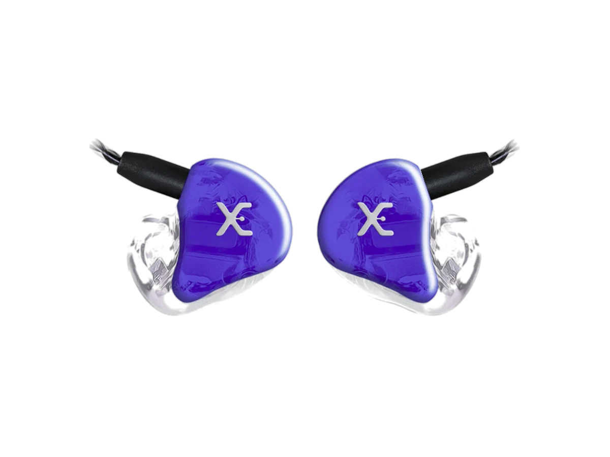
Primeiro moldadoBateristas, baixistas e guitarristas
Cada faixa no seu próprio driver: o bumbo para de embolar com o baixo e você finalmente separa o que está tocando do que a banda está tocando. É a saída do universal.
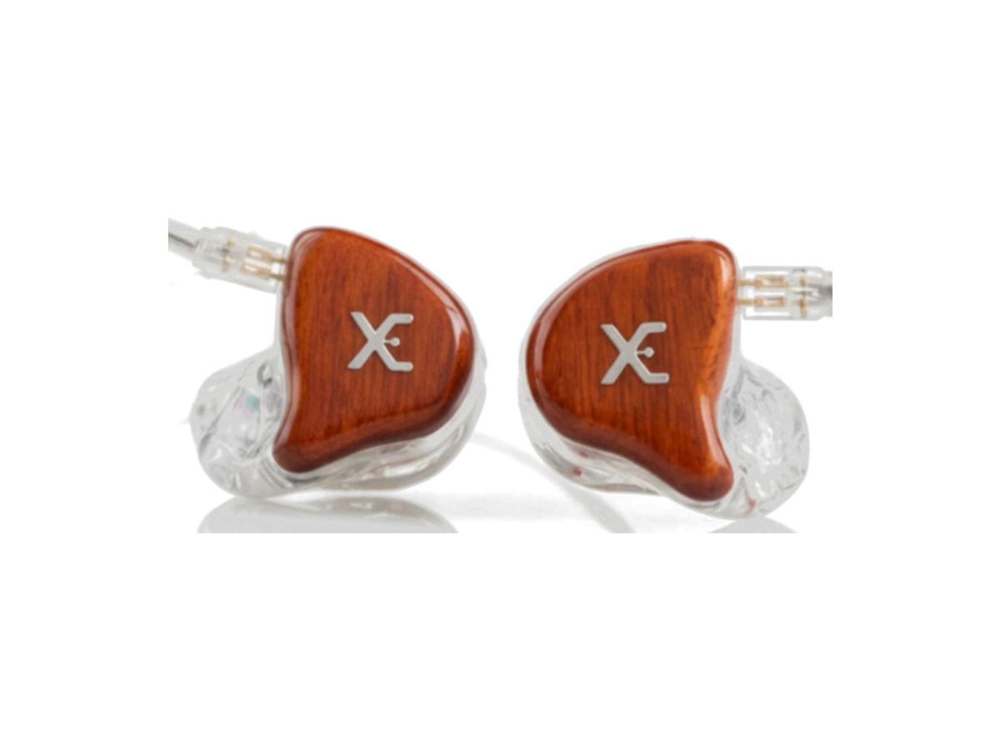
O rei do punchBateristas e baixistas
O grave bate no peito e ainda sobra fôlego quando a banda inteira sobe no refrão. É o modelo com mais sensibilidade e headroom da linha — o técnico não precisa forçar o seu canal.
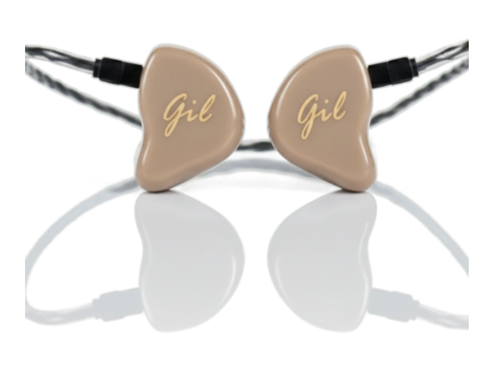
Bateristas, baixistas e percussionistas
O mesmo peso do XE3 com detalhe de sobra: dá pra ouvir a diferença entre o tom e o surdo, entre a mão e a baqueta. Pra quem já sabe o que quer e precisa de leitura fina do kit.
Vocalistas, guitarristas e tecladistas. O médio é onde mora a sua voz e o seu instrumento — e é a primeira coisa que o palco engole. Aqui o foco é se achar na afinação sem precisar pedir mais volume no retorno.
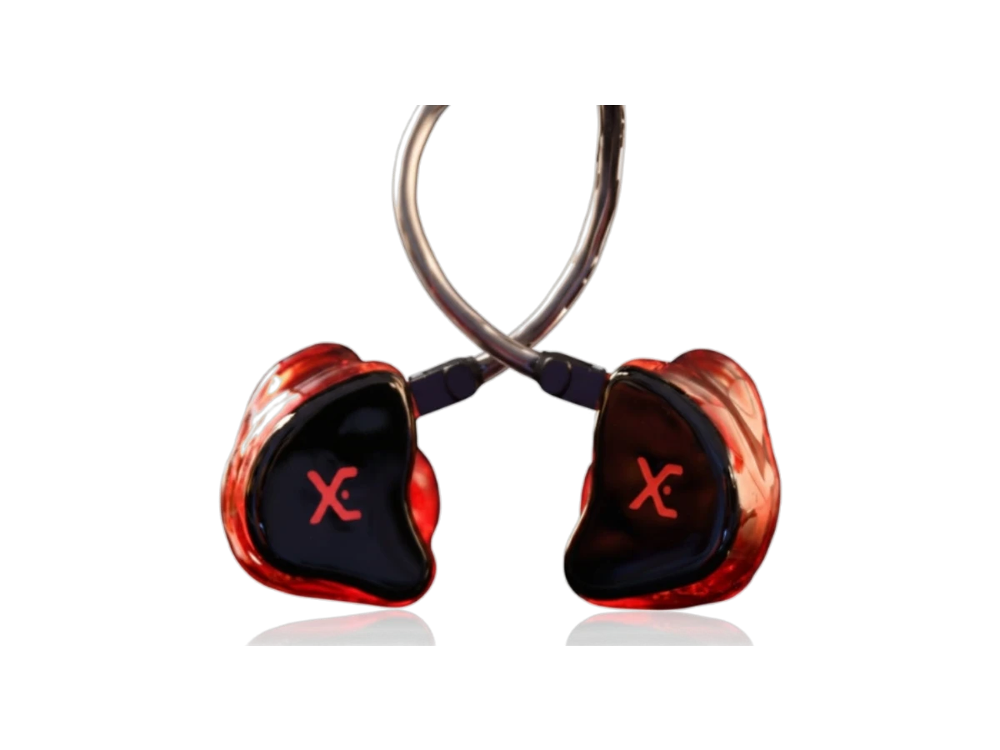
FlatVocalistas, técnicos de som e guitarristas
Nada empurrado, nada escondido: a sua voz sai do retorno do mesmo jeito que entrou no microfone. É por isso que técnico de som pede esse — o que ele ouve é o que está indo pro PA.
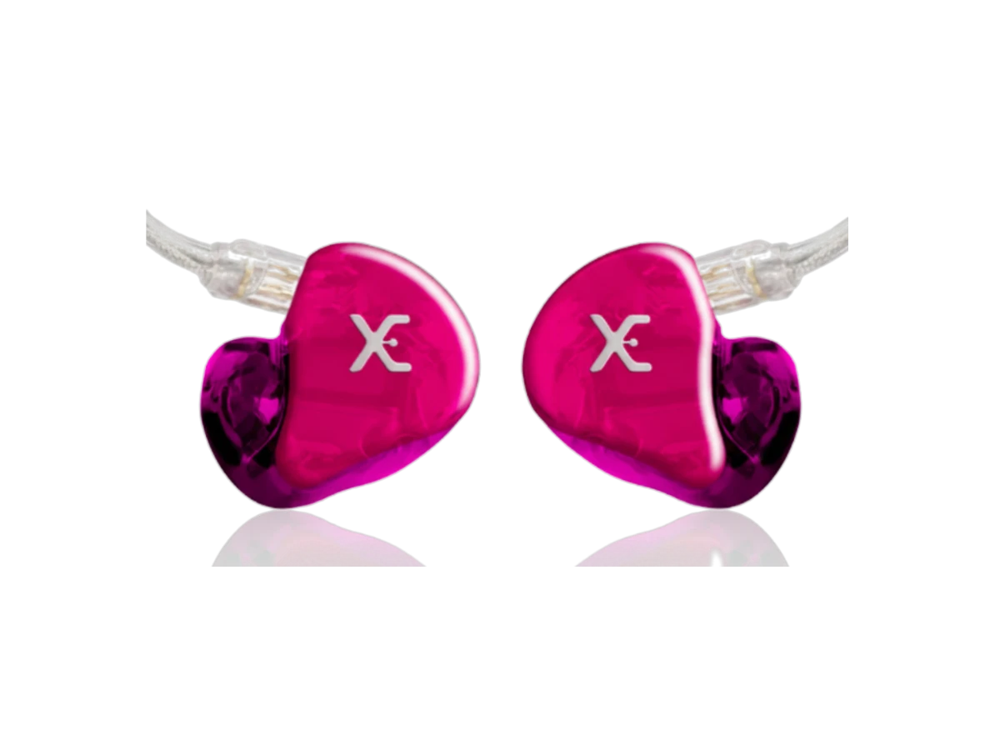
Vocalistas, técnicos de som e guitarristas
O XE4 com mais resolução. Guitarra com corpo sem comer o vocal, vocal que não desaparece quando a banda sobe. Serve o palco à noite e a referência no estúdio no dia seguinte.
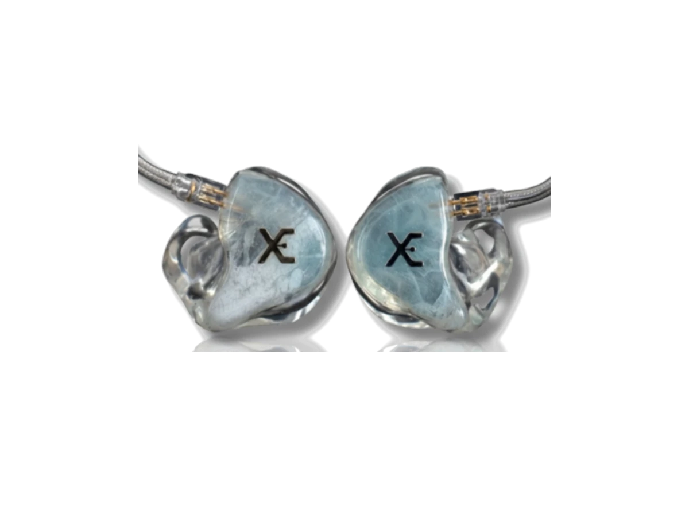
Vocalistas, tecladistas e guitarristas
Quatro drivers só pro grave e, mesmo assim, o médio na frente. Grave que você sente sem perder a própria voz — feito pra show grande, naipe de sopro e teclado com camada em cima de camada.
Técnicos de som, produtores e audiófilos. Quando a sua função é decidir o que vai pro PA ou o que fica na mixagem, descobrir o problema no vídeo do show depois não serve. Agudo aberto, separação e palco sonoro.
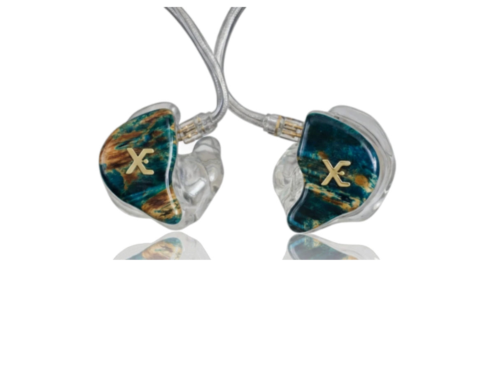
Mais musicalTécnicos de som, vocalistas e tecladistas
Agudo cristalino sem aquele brilho que cansa, grave aveludado por baixo. O mais musical da faixa de entrada — quem ensaia de fone todo dia sente a diferença no fim do dia.
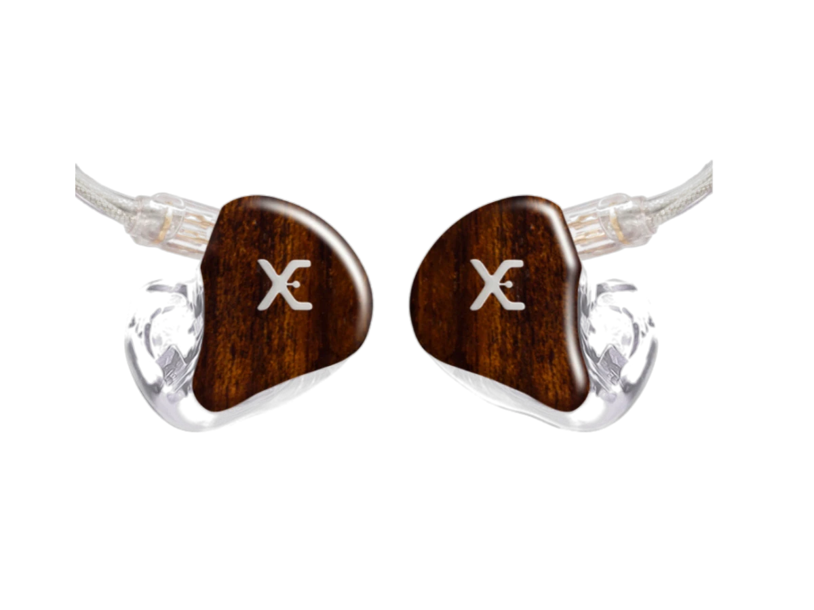
Padrão ouroVocalistas, audiófilos, técnicos e produtores
Subgrave separado do grave, médio separado do agudo: quatro vias de verdade. Cada instrumento ocupa um lugar próprio no palco sonoro, e o problema aparece na hora — não depois.
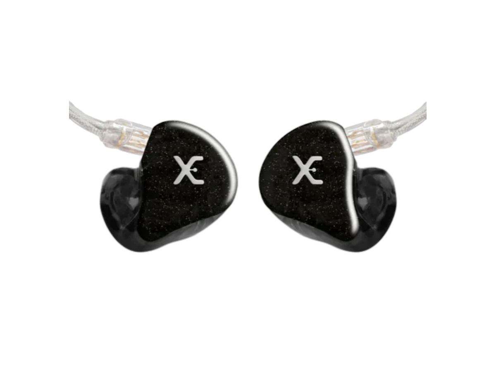
Topo da linhaAudiófilos — o som mais puro
Seis drivers só pros médios, em formação hexagonal, e um driver de alta que estende até 50 kHz. É o fim da linha: o que você escuta aqui é o que está na gravação, sem interpretação.
Valores a partir de, para a configuração base. A indicação por área é o ponto de partida — na conversa a gente ajusta ao que você toca, ao tamanho do palco e ao que já não funciona hoje. Cor da cápsula, faceplate, cabo e logo são orçados junto.
Os universais usam ponteira de silicone ou espuma e saem em até 2 dias úteis, sem pré-molde. Resolve a turnê que começa semana que vem — e serve de reserva depois que o moldado chegar.

Primeiro in-ear
Driver dinâmico de neodímio numa cápsula anatômica. Grave cheio e som detalhado pra ensaio, estudo e o dia a dia — sem gastar o de um moldado.

Topo da linha universal
Três drivers de armadura balanceada Knowles com crossover de 3 vias. É o universal que chega mais perto de um moldado de entrada — e o cabo é removível, então dura.

Quatro drivers sem pré-molde
Dois drivers de grave, um de médio e um de agudo. A assinatura da linha PRO em formato universal, pra quem quer ouvir o que vai encontrar no moldado antes de encomendar.
A cápsula sai do molde do seu ouvido, o faceplate é escolhido por você e os microdrivers são montados e afinados um a um. Não existe estoque: existe o seu.
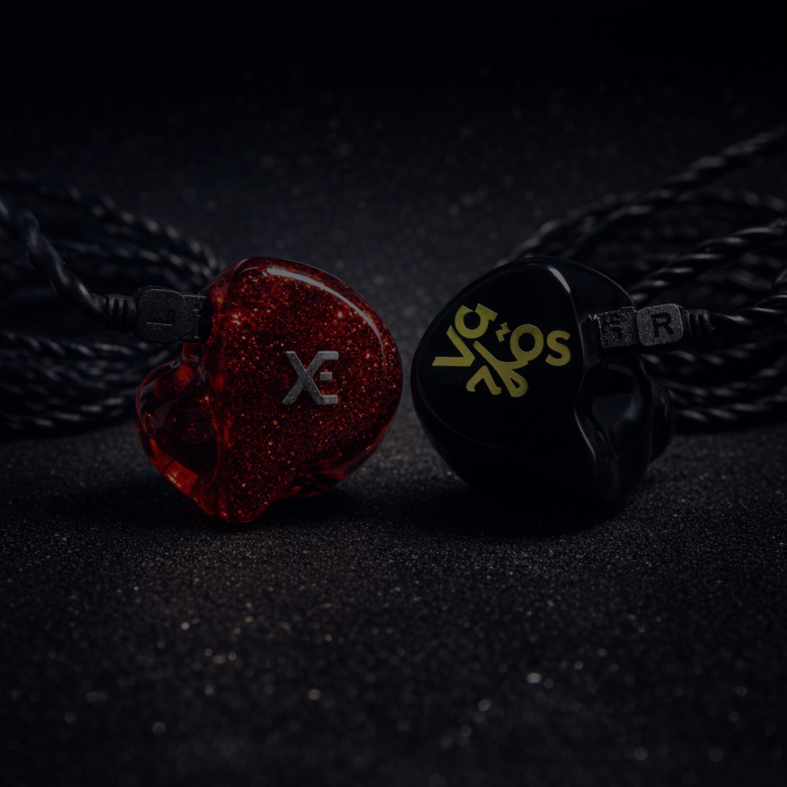
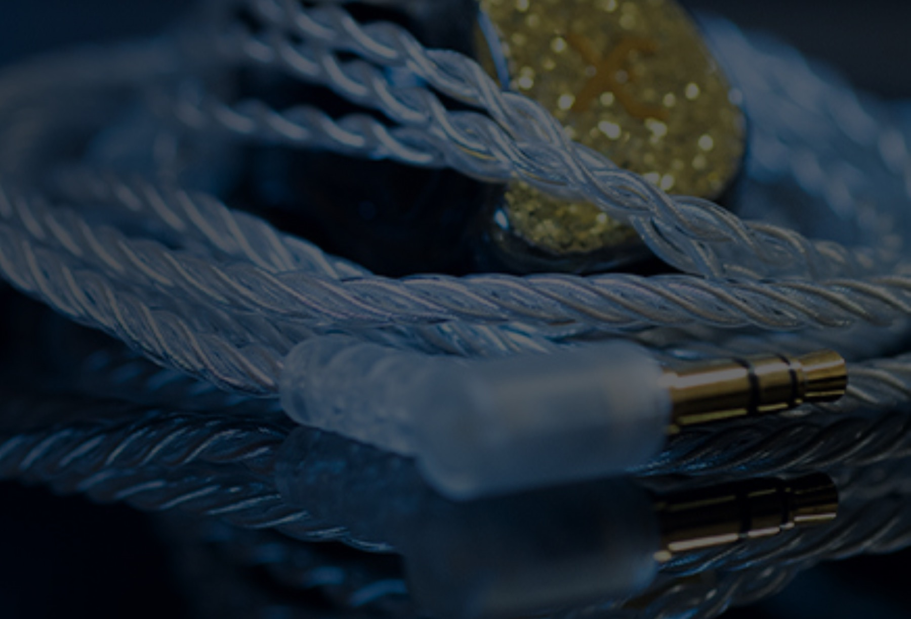
Seu fone é feito por encomenda, a partir do molde do seu ouvido. Por isso cada pedido passa por um especialista: para você acertar o modelo, o pré-molde chegar correto e o fone sair certo da primeira vez.
Você conta o que toca, onde toca e o que está faltando no seu retorno hoje. A gente indica o modelo — e explica por quê.
Indicamos um profissional perto de você. O molde precisa ser do tipo concha completa e incluir a segunda curva do canal auditivo.
Você envia fotos, vídeo ou faz uma videochamada com nosso time. Só seguimos com o pré-molde aprovado.
Cores da cápsula, faceplate, cabo e, se quiser, sua logomarca gravada. Envie o arquivo vetorizado e a gente adapta.
Pré-molde recebido, seu fone entra em produção: cerca de 4 semanas, com frete grátis e garantia de 1 ano.
Do sertanejo ao metal, do gospel à MPB: artistas e músicos que escolheram a Xtreme Ears para estar com eles no palco.

Não é depoimento escrito por agência. São músicos e técnicos de som falando no Instagram da Xtreme Ears, com o fone no ouvido e o palco atrás.
Vídeos publicados no @xtremeears, carregados direto do Instagram.
Assistência técnica própria, especializada nos fones que nós mesmos fabricamos. Antes de enviar qualquer coisa, você fala com o nosso suporte — boa parte dos casos se resolve na conversa.
O pré-molde é a base física do seu fone. Ele deve ser feito somente por um fonoaudiólogo, porque só um profissional garante segurança e precisão no procedimento. O molde precisa ser do tipo “concha completa” e incluir a segunda curva do canal auditivo. Nós indicamos um profissional perto de você através da nossa parceria com um centro auditivo com unidades em todo o Brasil.
A produção começa quando recebemos o seu pré-molde aprovado. Hoje o prazo é de aproximadamente 4 semanas. O prazo pode variar conforme o volume de trabalho — por isso combinamos a data de entrega com você durante o atendimento, especialmente se houver show ou turnê marcada.
O universal tem um duto sonoro com ponteira macia de silicone ou espuma, que se adapta ao contorno do ouvido. O moldado é fabricado sob encomenda, a partir do molde da sua anatomia, para um ajuste perfeito. Essa precisão é o que entrega o isolamento superior, o conforto por horas e a reprodução correta dos graves que o palco exige.
Significa mais separação de frequências, não necessariamente o som certo para você. O XE3/PRO tem 3 drivers e é a escolha de muitos bateristas por causa do punch e do headroom dinâmico; o XE4/PRO tem 4 e é flat, ideal para quem quer referência. A conversa com o especialista existe justamente para casar a assinatura sonora com o que você toca.
É uma ventilação variável que permite captar a ambiência externa — você escuta seu instrumento, os outros músicos e a plateia. Vem com 4 plugs que regulam o nível de som que passa pela ventilação, incluindo um fechado que restaura o isolamento completo. A contrapartida: quanto mais ventilação, maior a perda de graves e um pouco de clareza. Vale conversar antes de decidir.
Sim. Você escolhe as cores da cápsula, do faceplate e do cabo, e pode gravar sua logomarca ou desenho. Envie o arquivo vetorizado (CorelDraw ou Illustrator) para que ele seja adaptado ao tamanho do fone — logomarcas muito detalhadas podem precisar de ajustes por causa da miniaturização.
Fale com o nosso suporte no WhatsApp antes de enviar qualquer coisa — muita coisa se resolve na hora. Se for preciso enviar, nosso time passa as instruções. Durante a garantia de um ano, defeitos de fabricação e entupimentos são resolvidos sem custo de serviço, e a política de frete varia conforme o prazo: nos primeiros 7 dias, ida e volta por nossa conta.
Sim, todo o Brasil. Todo o atendimento consultivo acontece por WhatsApp, telefone ou videochamada, o pré-molde é feito com um fonoaudiólogo perto de você e o fone é enviado com frete grátis. Se preferir presencial, nosso endereço é Rua Dom José de Barros, 152, conj. 95/96 — Centro, São Paulo/SP.
Preencha os campos e abrimos o WhatsApp com a mensagem já escrita para o nosso time comercial. Sem formulário perdido, sem espera: a conversa começa na hora.
Um especialista Xtreme Ears com você do primeiro contato até a primeira música.